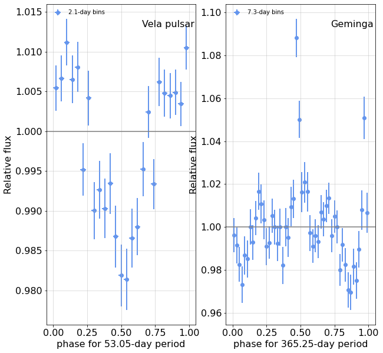
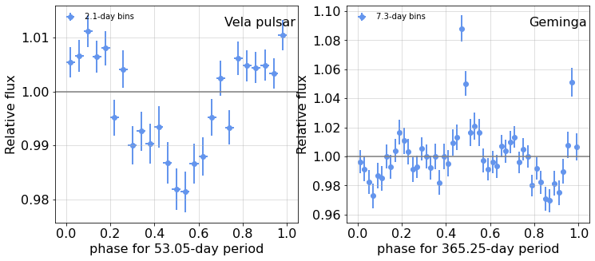

---

title: wtlike interface


keywords: fastai
sidebar: home_sidebar

summary: "Top-level interface to the rest of the package"
description: "Top-level interface to the rest of the package"
nb_path: "nbs/90_main.ipynb"
---
<!--

#################################################
### THIS FILE WAS AUTOGENERATED! DO NOT EDIT! ###
#################################################
# file to edit: nbs/90_main.ipynb
# command to build the docs after a change: nbdev_build_docs

-->

<div class="container" id="notebook-container">
        
    {% raw %}
    
<div class="cell border-box-sizing code_cell rendered">

</div>
    {% endraw %}

    {% raw %}
    
<div class="cell border-box-sizing code_cell rendered">

</div>
    {% endraw %}

    {% raw %}
    
<div class="cell border-box-sizing code_cell rendered">
<div class="input">

<div class="inner_cell">
    <div class="input_area">
<div class=" highlight hl-ipython3"><pre><span></span><span class="k">def</span> <span class="nf">phase_tests</span><span class="p">():</span>
    <span class="sd">&quot;&quot;&quot;</span>
<span class="sd">    ### Test phase_view</span>
<span class="sd">    {out1}</span>
<span class="sd">    </span>
<span class="sd">    {fig1}</span>
<span class="sd">    {out2}</span>
<span class="sd">    {fig2}</span>
<span class="sd">    &quot;&quot;&quot;</span>
    <span class="n">plt</span><span class="o">.</span><span class="n">rc</span><span class="p">(</span><span class="s1">&#39;font&#39;</span><span class="p">,</span> <span class="n">size</span><span class="o">=</span><span class="mi">16</span><span class="p">)</span>
    <span class="n">year</span> <span class="o">=</span> <span class="mf">365.25</span><span class="p">;</span> <span class="n">ref_date</span><span class="o">=</span><span class="s1">&#39;2008&#39;</span><span class="p">;</span> <span class="n">precess</span><span class="o">=</span><span class="mf">53.05</span>

    <span class="k">with</span> <span class="n">capture</span><span class="p">(</span><span class="sa">f</span><span class="s1">&#39;Vela setup, </span><span class="si">{</span><span class="n">precess</span><span class="si">}</span><span class="s1">-day period&#39;</span><span class="p">)</span> <span class="k">as</span> <span class="n">out1</span><span class="p">:</span>
        <span class="n">vela</span> <span class="o">=</span> <span class="n">WtLike</span><span class="p">(</span><span class="s1">&#39;Vela pulsar&#39;</span><span class="p">)</span>
        <span class="n">pv</span> <span class="o">=</span> <span class="n">vela</span><span class="o">.</span><span class="n">phase_view</span><span class="p">(</span> <span class="n">period</span><span class="o">=</span><span class="n">precess</span><span class="p">,</span> <span class="n">nbins</span><span class="o">=</span><span class="mi">25</span><span class="p">);</span> 
    <span class="n">fig1</span> <span class="o">=</span> <span class="n">figure</span><span class="p">(</span><span class="n">pv</span><span class="o">.</span><span class="n">plot</span><span class="p">(),</span> <span class="n">width</span><span class="o">=</span><span class="mi">500</span><span class="p">);</span>

    <span class="k">with</span> <span class="n">capture</span><span class="p">(</span><span class="sa">f</span><span class="s1">&#39;Geminga setup: period=</span><span class="si">{</span><span class="n">year</span><span class="si">}</span><span class="s1"> days, relative to </span><span class="si">{</span><span class="n">ref_date</span><span class="si">}</span><span class="s1">&#39;</span><span class="p">)</span> <span class="k">as</span> <span class="n">out2</span><span class="p">:</span>
        <span class="n">geminga</span> <span class="o">=</span> <span class="n">WtLike</span><span class="p">(</span><span class="s1">&#39;Geminga&#39;</span><span class="p">)</span>
        <span class="n">gv</span> <span class="o">=</span> <span class="n">geminga</span><span class="o">.</span><span class="n">phase_view</span><span class="p">(</span><span class="n">year</span><span class="p">,</span> <span class="n">nbins</span><span class="o">=</span><span class="mi">50</span><span class="p">,</span> <span class="n">reference</span><span class="o">=</span><span class="n">ref_date</span><span class="p">)</span>
    <span class="n">fig2</span> <span class="o">=</span> <span class="n">figure</span><span class="p">(</span><span class="n">gv</span><span class="o">.</span><span class="n">plot</span><span class="p">(),</span> <span class="n">width</span><span class="o">=</span><span class="mi">500</span><span class="p">)</span>    

<span class="c1">#     #gv.fluxes.query(&#39;flux&gt;1.07&#39;)</span>
<span class="c1">#     with capture(f&#39;Geminga with yearly bins&#39;) as out3:</span>
<span class="c1">#         gt = geminga.view(54685.15, 0, 7.305)</span>
<span class="c1">#     fig3= figure(gt.plot(UTC=True));</span>
<span class="c1">#     fq = gt.fluxes.query(&#39;flux&gt;1.1&#39;)[&#39;t flux&#39;.split()];</span>
    <span class="k">return</span> <span class="nb">locals</span><span class="p">()</span>

<span class="k">if</span> <span class="n">Config</span><span class="p">()</span><span class="o">.</span><span class="n">valid</span><span class="p">:</span>
    <span class="n">nbdoc</span><span class="p">(</span><span class="n">phase_tests</span><span class="p">)</span>
</pre></div>

    </div>
</div>
</div>

<div class="output_wrapper">
<div class="output">

<div class="output_area">


<div class="output_markdown rendered_html output_subarea ">
<h3 id="Test-phase_view">Test phase_view<a class="anchor-link" href="#Test-phase_view"> </a></h3><p><details  class="nbdoc-description" >  <summary> Vela setup, 53.05-day period </summary>  <div style="margin-left: 5%;"><pre>SourceData:  PSR J0835-4510: Restoring from cache with key "PSR J0835-4510_data"<br>SourceData: Source Vela pulsar with:<br>    data:     3,368,394 photons from 2008-08-04 to 2021-09-01<br>   exposure: 3,072,837 intervals,  average effective area 3541 cm^2 for 91.8 Ms<br>    rates:  source 8.36e-06/s, background 2.00e-06/s, TS 7052015.5<br>CellData: Bin photon data into 682 1-week bins from 54683.0 to 59457.0<br>LightCurve: select 674 cells for fitting with e&gt;35 & n&gt;2<br>CellData: Bin photon data into 2249 2.1-day bins from 54684.6 to 59456.9<br>LightCurve: select 2192 cells for fitting with e&gt;10.61 & n&gt;2<br>LightCurve: select 25 cells for fitting with e&gt;10.61 & n&gt;2<br></pre></div> </details></p>
<figure style="margin-left: 5%" title="Figure 1">  <a href="images/phase_tests_fig_01.png" title="images/phase_tests_fig_01.png">       </a> </figure>
<details  class="nbdoc-description" >  <summary> Geminga setup: period=365.25 days, relative to 2008 </summary>  <div style="margin-left: 5%;"><pre>SourceData:  4FGL J0633.9+1746: Restoring from cache with key "PSR J0633+1746_data"<br>SourceData: Source Geminga with:<br>  data:     1,139,632 photons from 2008-08-04 to 2021-09-01<br>   exposure: 3,189,511 intervals,  average effective area 2775 cm^2 for 95.4 Ms<br>    rates:  source 3.22e-06/s, background 1.08e-06/s, TS 2290923.9<br>CellData: Bin photon data into 682 1-week bins from 54683.0 to 59457.0<br>LightCurve: select 667 cells for fitting with e&gt;35 & n&gt;2<br>CellData: Bin photon data into 653 7.3-day bins from 54685.2 to 59455.3<br>LightCurve: select 642 cells for fitting with e&gt;36.525 & n&gt;2<br>LightCurve: select 50 cells for fitting with e&gt;36.525 & n&gt;2<br></pre></div> </details>
<figure style="margin-left: 5%" title="Figure 2">  <a href="images/phase_tests_fig_02.png" title="images/phase_tests_fig_02.png">       </a> </figure>
</div>

</div>

</div>
</div>

</div>
    {% endraw %}

    {% raw %}
    
<div class="cell border-box-sizing code_cell rendered">

<div class="output_wrapper">
<div class="output">

<div class="output_area">


<div class="output_markdown rendered_html output_subarea ">
<h2 id="WtLike" class="doc_header"><code>class</code> <code>WtLike</code><a href="" class="source_link" style="float:right">[source]</a></h2><blockquote><p><code>WtLike</code>(<strong>*<code>pars</code></strong>, <strong>**<code>kwargs</code></strong>) :: <a href="/wtlikelightcurve.html#LightCurve"><code>LightCurve</code></a></p>
</blockquote>
<h2 id="Summary">Summary<a class="anchor-link" href="#Summary"> </a></h2><p>There are three layers of initialization, implemented in superclasses,
each with parameters. The classnames, associated parameters and data members set:</p>
<p>SourceData -- load photons and exposure
    parameters:</p>

<pre><code>  - source : name, a PointSource object, or a Simulation object
  - config [Config()] : basic configuration
  - week_range [None] : range of weeks to load
  - key [''] : the cache key: '' means construct one with the source name, None to disable
  - clear [False] : if using cache, clear the contents first
sets:
  - photons
  - exposure

</code></pre>
<p>CellData -- create cells
    parameters:</p>

<pre><code>  - time_bins [Config().time_bins] : binning: start, stop, binsize
sets:
  - cells

</code></pre>
<p>LightCurve -- likelihood analysis of the cells
    parameters:</p>

<pre><code>  - e_min [10] -- threshold for exposure (cm^2 units)
  - n_min [2]  -- likelihood has trouble with this few
  - lc_key [None] -- possible cache for light curve
sets:
  - fits, fluxes

</code></pre>
<p>WtLike (this class) -- no parameters (may add BB-specific ones)
    Implements:  bb_view, plot_BB
    sets:</p>

<pre><code>  - bb_flux  (only if bb_view invoked)</code></pre>

</div>

</div>

<div class="output_area">


<div class="output_markdown rendered_html output_subarea ">
<h4 id="WtLike.bb_view" class="doc_header"><code>WtLike.bb_view</code><a href="__main__.py#L47" class="source_link" style="float:right">[source]</a></h4><blockquote><p><code>WtLike.bb_view</code>(<strong><code>p0</code></strong>=<em><code>0.05</code></em>, <strong><code>key</code></strong>=<em><code>None</code></em>, <strong><code>clear</code></strong>=<em><code>False</code></em>)</p>
</blockquote>
<p>Return a view with the BB analysis applied</p>
<ul>
<li>p0 -- false positive probability parameter</li>
</ul>
<p>Its <code>plot</code> function will by default show an overplot on the parent's data points.</p>

</div>

</div>

<div class="output_area">


<div class="output_markdown rendered_html output_subarea ">
<h4 id="WtLike.phase_view" class="doc_header"><code>WtLike.phase_view</code><a href="__main__.py#L96" class="source_link" style="float:right">[source]</a></h4><blockquote><p><code>WtLike.phase_view</code>(<strong><code>period</code></strong>, <strong><code>nbins</code></strong>=<em><code>25</code></em>, <strong><code>reference</code></strong>=<em><code>'2008'</code></em>)</p>
</blockquote>
<p>Return a "phase" view, in which the cell time binning is according to phase.</p>
<ul>
<li>reference -- a UTC date for aligning the bins.</li>
</ul>

</div>

</div>

</div>
</div>

</div>
    {% endraw %}

    {% raw %}
    
<div class="cell border-box-sizing code_cell rendered">
<div class="input">

<div class="inner_cell">
    <div class="input_area">
<div class=" highlight hl-ipython3"><pre><span></span><span class="n">full</span> <span class="o">=</span> <span class="kc">None</span>
<span class="c1"># code for the demo--this shouid be collapsed</span>
<span class="k">def</span> <span class="nf">demo</span><span class="p">(</span><span class="n">clear</span><span class="o">=</span><span class="kc">False</span><span class="p">):</span>
    <span class="sd">&quot;&quot;&quot;</span>
<span class="sd">    ## Test/Demonstration with 3C 279</span>
<span class="sd">    </span>
<span class="sd">    &gt; Note that this also demonstrates using `nbdoc` to have a single Jupyterlab cell generate a document</span>
<span class="sd">    </span>
<span class="sd">    First, the weekly light curve:</span>
<span class="sd">    {out1}    {fig1}</span>
<span class="sd">    </span>
<span class="sd">    Replot the figure with an expanded scale to see position of a flare:</span>
<span class="sd">    {fig2}</span>
<span class="sd">    {out3}    {fig3}</span>
<span class="sd">    {out4}    {fig4}</span>
<span class="sd">    </span>
<span class="sd">    Table of BB fits</span>
<span class="sd">    {bb_table}</span>
<span class="sd">    </span>
<span class="sd">    This can be compared with Figure 4 from the [Kerr paper](https://arxiv.org/pdf/1910.00140.pdf)</span>
<span class="sd">    {kerr_fig4}</span>
<span class="sd">    &quot;&quot;&quot;</span>
    <span class="k">global</span> <span class="n">full</span>
    
    <span class="c1">#with capture_print(&#39;Create full weekly light curve&#39;) as out1:</span>
    <span class="n">full</span> <span class="o">=</span> <span class="n">WtLike</span><span class="p">(</span><span class="s1">&#39;3C 279&#39;</span><span class="p">,</span> <span class="n">clear</span><span class="o">=</span><span class="n">clear</span><span class="p">)</span>
    
    <span class="n">fig1</span> <span class="o">=</span> <span class="n">figure</span><span class="p">(</span>
        <span class="n">full</span><span class="o">.</span><span class="n">plot</span><span class="p">(</span><span class="n">yscale</span><span class="o">=</span><span class="s1">&#39;log&#39;</span><span class="p">,</span> <span class="n">ylim</span><span class="o">=</span><span class="p">(</span><span class="mf">0.2</span><span class="p">,</span><span class="mi">20</span><span class="p">),</span> <span class="n">figsize</span><span class="o">=</span><span class="p">(</span><span class="mi">15</span><span class="p">,</span><span class="mi">5</span><span class="p">),</span> <span class="n">xlabel</span><span class="o">=</span><span class="s1">&#39;MJD&#39;</span><span class="p">,</span> <span class="n">fmt</span><span class="o">=</span><span class="s1">&#39;.&#39;</span><span class="p">,</span> <span class="n">fignum</span><span class="o">=</span><span class="mi">1</span><span class="p">),</span>
        <span class="n">caption</span><span class="o">=</span><span class="s1">&#39;Full scale&#39;</span><span class="p">,</span> <span class="n">width</span><span class="o">=</span><span class="mi">600</span><span class="p">)</span>  
    
    <span class="n">fig2</span> <span class="o">=</span> <span class="n">figure</span><span class="p">(</span>
        <span class="n">full</span><span class="o">.</span><span class="n">plot</span><span class="p">(</span>  <span class="n">figsize</span><span class="o">=</span><span class="p">(</span><span class="mi">15</span><span class="p">,</span><span class="mi">5</span><span class="p">),</span> <span class="n">xlabel</span><span class="o">=</span><span class="s1">&#39;MJD&#39;</span><span class="p">,</span> <span class="n">fmt</span><span class="o">=</span><span class="s1">&#39;o&#39;</span><span class="p">,</span> <span class="n">fignum</span><span class="o">=</span><span class="mi">2</span><span class="p">,</span>  <span class="n">xlim</span><span class="o">=</span><span class="p">(</span><span class="mi">57100</span><span class="p">,</span> <span class="mi">57300</span><span class="p">),),</span>
        <span class="n">width</span><span class="o">=</span><span class="mi">600</span><span class="p">)</span>  
    
    <span class="k">with</span> <span class="n">capture_print</span><span class="p">(</span><span class="s1">&#39;Define orbit-based subset around large flare at MJD 57189&#39;</span><span class="p">)</span> <span class="k">as</span> <span class="n">out3</span><span class="p">:</span>
        <span class="n">orbit</span> <span class="o">=</span> <span class="n">full</span><span class="o">.</span><span class="n">view</span><span class="p">((</span><span class="mi">57186</span><span class="p">,</span> <span class="mi">57191</span><span class="p">,</span> <span class="mi">0</span><span class="p">))</span>
    <span class="n">fig3</span> <span class="o">=</span> <span class="n">figure</span><span class="p">(</span>
        <span class="n">orbit</span><span class="o">.</span><span class="n">plot</span><span class="p">(</span><span class="n">fmt</span><span class="o">=</span><span class="s1">&#39;o&#39;</span><span class="p">,</span> <span class="n">tzero</span><span class="o">=</span><span class="mi">57186</span><span class="p">,</span>   <span class="n">fignum</span><span class="o">=</span><span class="mi">3</span> <span class="p">),</span>
            <span class="n">width</span><span class="o">=</span><span class="mi">600</span><span class="p">)</span>
    
    <span class="k">with</span> <span class="n">capture_print</span><span class="p">(</span><span class="s1">&#39;Apply BB and overplot it with the cells on which it is based&#39;</span><span class="p">)</span> <span class="k">as</span> <span class="n">out4</span><span class="p">:</span>
        <span class="n">bborbit</span> <span class="o">=</span> <span class="n">orbit</span><span class="o">.</span><span class="n">bb_view</span><span class="p">()</span>
    <span class="n">fig4</span> <span class="o">=</span> <span class="n">figure</span><span class="p">(</span>
        <span class="n">bborbit</span><span class="o">.</span><span class="n">plot</span><span class="p">(</span><span class="n">fmt</span><span class="o">=</span><span class="s1">&#39;o&#39;</span><span class="p">,</span> <span class="n">tzero</span><span class="o">=</span><span class="mi">57186</span><span class="p">,</span>   <span class="n">fignum</span><span class="o">=</span><span class="mi">4</span><span class="p">),</span>
                <span class="n">width</span><span class="o">=</span><span class="mi">600</span><span class="p">)</span>
    
    <span class="n">bb_table</span> <span class="o">=</span> <span class="n">orbit</span><span class="o">.</span><span class="n">fluxes</span>
    
    <span class="n">kerr_fig4</span> <span class="o">=</span> <span class="n">image</span><span class="p">(</span><span class="s1">&#39;kerr_fig4.png&#39;</span><span class="p">,</span> <span class="n">width</span><span class="o">=</span><span class="mi">600</span><span class="p">,</span> <span class="n">caption</span><span class="o">=</span><span class="kc">None</span><span class="p">)</span>
    <span class="k">return</span> <span class="nb">locals</span><span class="p">()</span>

<span class="k">if</span> <span class="n">config</span><span class="o">.</span><span class="n">valid</span><span class="p">:</span>
    <span class="n">nbdoc</span><span class="p">(</span><span class="n">demo</span><span class="p">,</span> <span class="kc">False</span><span class="p">)</span>
</pre></div>

    </div>
</div>
</div>

<div class="output_wrapper">
<div class="output">

<div class="output_area">

<div class="output_subarea output_stream output_stdout output_text">
<pre>SourceData:  4FGL J1256.1-0547: Restoring from cache with key &#34;P88Y3243_data&#34;
SourceData: Source 3C 279 with:
	 data:       182,684 photons from 2008-08-04 to 2021-09-11
	 exposure: 2,896,631 intervals,  average effective area 2847 cm^2 for 86.5 Ms
	 rates:  source 3.95e-07/s, background 3.47e-07/s, TS 183590.9
CellData: Bin photon data into 683 1-week bins from 54683.0 to 59464.0
LightCurve: select 672 cells for fitting with e&gt;35 &amp; n&gt;2
</pre>
</div>
</div>

<div class="output_area">

<div class="output_subarea output_stream output_stderr output_text">
<pre>/home/burnett/miniconda3/lib/python3.9/site-packages/scipy/optimize/minpack.py:175: RuntimeWarning: The iteration is not making good progress, as measured by the 
  improvement from the last ten iterations.
  warnings.warn(msg, RuntimeWarning)
</pre>
</div>
</div>

<div class="output_area">


<div class="output_markdown rendered_html output_subarea ">
<h2 id="Test/Demonstration-with-3C-279">Test/Demonstration with 3C 279<a class="anchor-link" href="#Test/Demonstration-with-3C-279"> </a></h2><blockquote><p>Note that this also demonstrates using <code>nbdoc</code> to have a single Jupyterlab cell generate a document</p>
</blockquote>
<p>First, the weekly light curve:
{out1}    <figure style="margin-left: 5%" title="Figure 1">  <a href="images/demo_fig_01.png" title="images/demo_fig_01.png">       </a>  <figcaption><b>Figure 1</b>. Full scale</figcaption></figure></p>
<p>Replot the figure with an expanded scale to see position of a flare:</p>
<figure style="margin-left: 5%" title="Figure 2">  <a href="images/demo_fig_02.png" title="images/demo_fig_02.png">       </a> </figure>
<details  class="nbdoc-description" >  <summary> Define orbit-based subset around large flare at MJD 57189 </summary>  <div style="margin-left: 5%;"><pre>CellData: Bin photon data into 80 orbit-based bins from 57186.1 to 57191.0<br>LightCurve: select 62 cells for fitting with e&gt;0 & n&gt;2<br></pre></div> </details>    <figure style="margin-left: 5%" title="Figure 3">  <a href="images/demo_fig_03.png" title="images/demo_fig_03.png">       </a> </figure>
<details  class="nbdoc-description" >  <summary> Apply BB and overplot it with the cells on which it is based </summary>  <div style="margin-left: 5%;"><pre>Bayesian Blocks: partitioning 62 cells using LikelihoodFitness with penalty 5%<br> found 10 / 62 blocks.<br>LightCurve: Loaded 10 / 10 cells for fitting<br></pre></div> </details>    <figure style="margin-left: 5%" title="Figure 4">  <a href="images/demo_fig_04.png" title="images/demo_fig_04.png">       </a> </figure><p>Table of BB fits</p>
<div>
<style scoped>
    .dataframe tbody tr th:only-of-type {
        vertical-align: middle;
    }

    .dataframe tbody tr th {
        vertical-align: top;
    }

    .dataframe thead th {
        text-align: right;
    }
</style>
<table border="1" class="dataframe">
  <thead>
    <tr style="text-align: right;">
      <th>t</th>
      <th>tw</th>
      <th>n</th>
      <th>e</th>
      <th>ts</th>
      <th>flux</th>
      <th>errors</th>
      <th>limit</th>
    </tr>
  </thead>
  <tbody>
    <tr>
      <td>57186.116</td>
      <td>0.017</td>
      <td>5</td>
      <td>4.569</td>
      <td>12.600</td>
      <td>1.820</td>
      <td>(-0.892, 1.291)</td>
      <td>4.739</td>
    </tr>
    <tr>
      <td>57186.253</td>
      <td>0.025</td>
      <td>9</td>
      <td>6.530</td>
      <td>15.500</td>
      <td>2.458</td>
      <td>(-0.967, 1.244)</td>
      <td>5.014</td>
    </tr>
    <tr>
      <td>57186.385</td>
      <td>0.026</td>
      <td>9</td>
      <td>6.564</td>
      <td>16.300</td>
      <td>2.625</td>
      <td>(-0.994, 1.262)</td>
      <td>5.192</td>
    </tr>
    <tr>
      <td>...</td>
      <td>...</td>
      <td>...</td>
      <td>...</td>
      <td>...</td>
      <td>...</td>
      <td>...</td>
      <td>...</td>
    </tr>
    <tr>
      <td>57190.831</td>
      <td>0.012</td>
      <td>9</td>
      <td>4.590</td>
      <td>27.600</td>
      <td>4.047</td>
      <td>(-1.413, 1.794)</td>
      <td>7.696</td>
    </tr>
    <tr>
      <td>57190.898</td>
      <td>0.009</td>
      <td>3</td>
      <td>3.417</td>
      <td>7.700</td>
      <td>1.932</td>
      <td>(-1.038, 1.538)</td>
      <td>5.468</td>
    </tr>
    <tr>
      <td>57190.966</td>
      <td>0.006</td>
      <td>3</td>
      <td>2.182</td>
      <td>2.200</td>
      <td>1.979</td>
      <td>(-1.506, 2.323)</td>
      <td>7.520</td>
    </tr>
  </tbody>
</table>
</div><p>This can be compared with Figure 4 from the <a href="https://arxiv.org/pdf/1910.00140.pdf">Kerr paper</a></p>
<figure style="margin-left: 5%" title="Figure 5">  <a href="images/demo_fig_05.png" title="images/demo_fig_05.png">       </a> </figure>
</div>

</div>

</div>
</div>

</div>
    {% endraw %}

</div>
 

